Для моделирования интимной близости (игрового секса) используется метафора стихии (поэтическое
чувственное описание природных явлений). Уединившись в будуаре, пара (или группа) выбирают подходящую по
настроению главу «Книги стихий» и по очереди читают текст, повышая эмоциональный накал.
После оставьте
памятную запись на последней странице Книги.
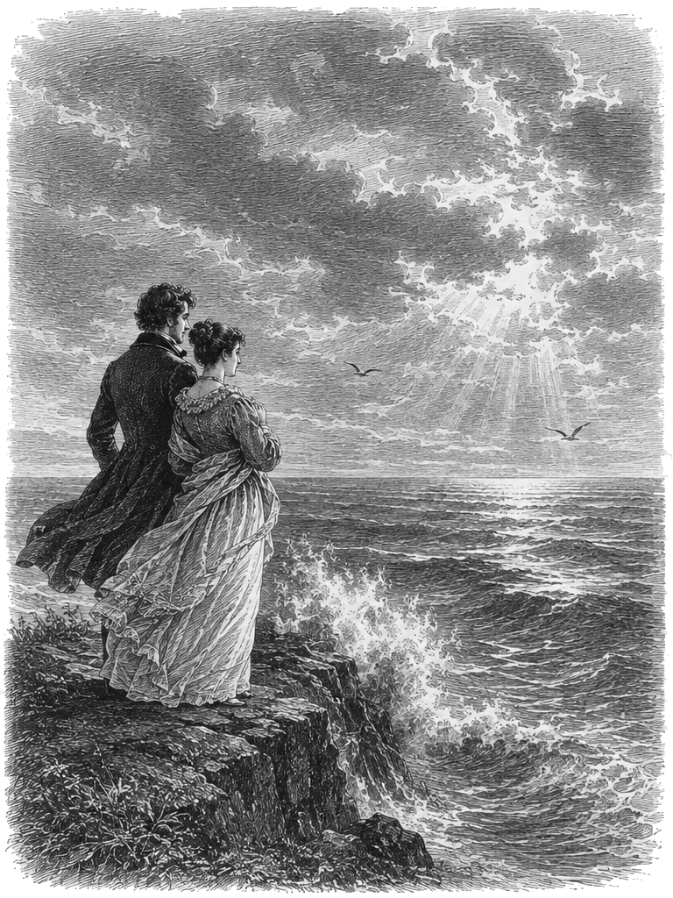
«Безмолвное море, лазурное море...»
Настроение: созерцательная, тревожная лирика подлинной поэзии – для пар, что предпочитают чужие стихи вольной импровизации.
Первый игрок: Безмолвное море, лазурное море, Стою очарован над бездной
твоей.
Ты живо; ты дышишь; смятенной любовью, Тревожною думой наполнено ты.
Второй игрок: Безмолвное море, лазурное море, Открой мне глубокую тайну
твою:
Что движет твое необъятное лоно? Чем дышит твоя напряженная грудь?
Первый игрок: Иль тянет тебя из земныя неволи Далекое светлое небо к
себе?..
Таинственной, сладостной полное жизни, Ты чисто в присутствии чистом его:
Второй игрок: Ты льешься его светозарной лазурью, Вечерним и утренним
светом горишь,
Ласкаешь его облака золотые И радостно блещешь звездами его.
Первый игрок: Когда же сбираются темные тучи, Чтоб ясное небо отнять у
тебя –
Ты бьешься, ты воешь, ты волны подъемлешь, Ты рвешь и терзаешь враждебную мглу...
Второй игрок: И мгла исчезает, и тучи уходят, Но, полное прошлой тревоги
своей,
Ты долго вздымаешь испуганны волны, И сладостный блеск возвращенных небес
Первый игрок: Не вовсе тебе тишину возвращает; Обманчив твоей
неподвижности вид:
Ты в бездне покойной скрываешь смятенье, Ты, небом любуясь, дрожишь за него.
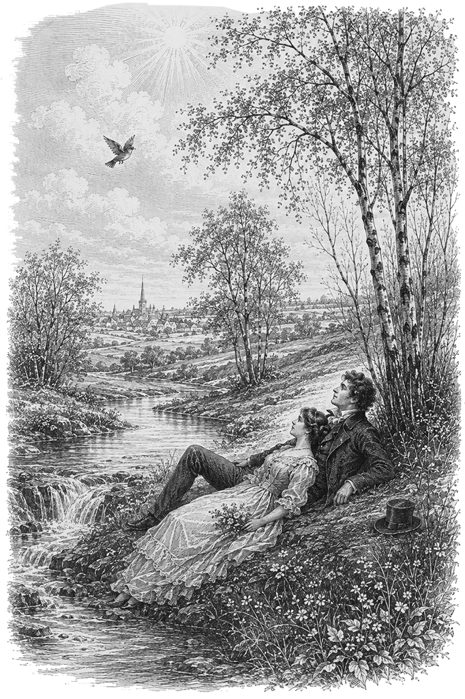
«Весна, весна! как воздух чист!..»
Настроение: светлая, ликующая нежность весеннего пробуждения. Хорошо открывает вечер или подходит самым юным парам.
Первый игрок: Весна, весна! как воздух чист! Как ясен небосклон!
Своей лазурию живой Слепит мне очи он.
Второй игрок: Весна, весна! как высоко На крыльях ветерка,
Ласкаясь к солнечным лучам, Летают облака!
Первый игрок: Шумят ручьи! блестят ручьи! Взревев, река несет
На торжествующем хребте Поднятый ею лед!
Второй игрок: Еще древа обнажены, Но в роще ветхий лист,
Как прежде, под моей ногой И шумен и душист.
Первый игрок: Под солнце самое взвился И в яркой вышине
Незримый жавронок поет Заздравный гимн весне.
Второй игрок: Что с нею, что с моей душой? С ручьем она ручей
И с птичкой птичка! с ним журчит, Летает в небе с ней!
Первый игрок: Зачем так радует ее И солнце и весна!
Ликует ли, как дочь стихий, На пире их она?
Второй игрок: Что нужды! счастлив, кто на нем Забвенье мысли пьет,
Кого далёко от нее Он, дивный, унесет!
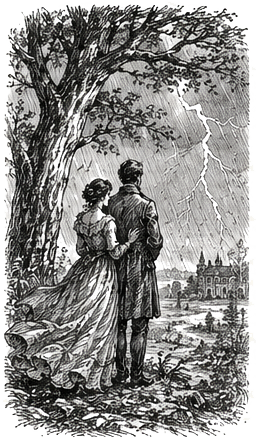
«Воздух дышит предчувствием бури, и шёпот листвы становится всё громче...»
Настроение: универсальный вариант. Нарастающее чувственное напряжение, буря эмоций и расслабление.
Первый игрок: «Вы замечали, как душно стало в зале? В саду замерла каждая веточка. Воздух стал тяжёлым, густым... Слышите этот едва различимый, далёкий рокот? Небо на горизонте начинает понемногу темнеть. Надвигается что-то неизбежное, огромное...»
Второй игрок: «Да, я чувствую это. Ветер внезапно срывается с места, он налетает порывами, путает волосы, распахивает окна. Первые капли – крупные, горячие – падают на иссохшую землю. Они оставляют тёмные следы, и земля жадно впитывает их, ожидая большего...»
Первый игрок: «И вот небо раскалывается надвое! Вспышка молнии ослепляет, стирает все границы. Хлынул ливень – яростный, безудержный, оглушительный. Потоки воды смывают всё на своём пути, нам больше негде укрыться от этой бури, да мы и не хотим...»
Второй игрок: «Гром гремит в самый последний раз... и уходит дальше, за холмы. Ливень сменяется тихим, тёплым дождём. Вода стекает по листьям. Всё вокруг дышит свежестью и истомой. Мы спасены... и мы полностью изменены». (Синхронный выдох, книга закрывается)
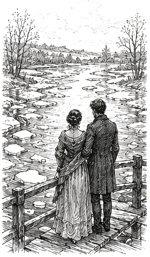
«Лёд приличий тонок, а под ним бурлит живая, неукротимая вода...»
Настроение: глубокое, романтичное. Для пар, чьи чувства долго сдерживались строгими рамками общества.
Первый игрок: «Зима была слишком долгой и холодной, закованной в строгие рамки приличий. Но солнце поднимается всё выше. Слышите, как под тонкой коркой льда на усадебном пруду начинает роптать и просыпаться живая вода? Лед истончается, он едва держится...»
Второй игрок: «Один неосторожный луч – и лед трескается с оглушительным звоном. Ручьи сбегают с холмов, они бурлят, пенятся, сливаются в один неистовый поток. Вода прибывает каждую секунду, её больше не удержать в прежних берегах...»
Первый игрок: «Река выходит из русла! Волна накрывает с головой, крутит, уносит нас обоих по течению. Это крушение старого мира, чистая, неостановимая сила природы. Земля полностью уходит под воду...»
Второй игрок: «Поток замедляет свой бег, разливаясь бескрайним, спокойным озером под тёплым весенним солнцем. Вода гладкая, как зеркало. Наступил покой». (Синхронный выдох, книга закрывается)
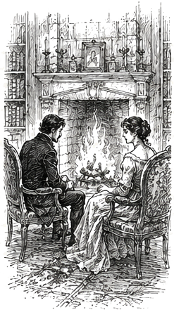
«Маленькая искра способна разжечь пожар, который уничтожит всё вокруг».
Настроение: подходит для вечерних свиданий в кабинете или библиотеке. Тепло, уют и обжигающая страсть.
Первый игрок: «В комнате полумрак, лишь в глубине камина тлеют забытые угли. Но стоит подбросить сухую щепку... Смотрите, как робкая искра цепляется за дерево. Сначала появляется тонкий, едва заметный в темноте дымок...»
Второй игрок: «А затем вспыхивает первый язычок пламени. Он жадно охватывает полено, лижет сухую кору. Огонь разгорается, в комнате становится жарко. Слышите этот треск? Дерево сдаётся под натиском тепла, оно начинает обугливаться и плакать смолой...»
Первый игрок: «Огонь превращается в бушующее пламя! Гудит дымоход, искры взлетают вверх, жар становится невыносимым, обжигающим. Всё, что попало в этот очаг, сгорает дотла, превращаясь в единую огненную массу...»
Второй игрок: «Дрова прогорели. Огонь опадает, оставляя лишь малиновое, глубокое сияние углей. Они всё ещё дышат сильнейшим теплом, но буря утихла. Остался только пепел и блаженная нега». (Синхронный выдох, книга закрывается)
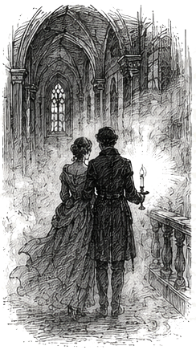
«Когда мир исчезает в тумане, остаются лишь двое в бархатной темноте...»
Настроение: таинственные, запретные, немного опасные отношения (например, замужняя дама и молодой офицер).
Первый игрок: «За окнами глухая осенняя ночь. Из низины на усадьбу наползает густой, белый туман. Он медленно глушит все звуки, скрывает очертания деревьев. Мы словно остались одни во всей вселенной. Холодный воздух касается кожи, заставляя вздрогнуть…»
Второй игрок: «Но здесь, в темноте, мы зажигаем одну свечу. Туман подступает к самым стеклам, очерчивает наши силуэты. Мы делаем шаг навстречу, стирая границы. Тьма и холод снаружи лишь сильнее заставляют нас искать тепла друг в друге. Шаг за шагом, на ощупь, мы теряем контроль…»
Первый игрок: «Свеча гаснет от случайного вздоха! Нас накрывает глухая, бархатная темнота. Больше нет условностей, нет имен и титулов. Ощущения обостряются до предела, каждый вдох кажется оглушительным. Мы растворяемся в этой ночи без остатка, падая в бездну…»
Второй игрок: «Ночной морок медленно рассеивается. За окном брезжит бледный, серый рассвет. Туман оседает на траву каплями росы. Мы возвращаемся в реальный мир, но эта ночь навсегда останется нашей тайной». (Синхронный выдох, книга закрывается)
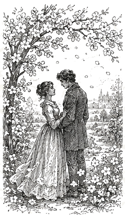
«Аромат весенних цветов кружит голову сильнее самого крепкого вина...»
Настроение: светлый, нежный, чистый романтизм. Идеально для первой юношеской любви.
Первый игрок: «Майское утро. Наш яблоневый сад окутан нежно-розовым облаком. Бутоны едва-едва раскрываются, робко протягивая лепестки навстречу первому солнцу. Воздух напоен тонким, кружащим голову ароматом. Все замерло в предвкушении чуда…»
Второй игрок: «Солнце поднимается выше, согревая каждый лепесток. Заразительное тепло проникает под кожу. Внезапный порыв ветра встряхивает ветви, и вокруг нас закружился вихрь из тысяч лепестков. Они ложатся на плечи, на волосы, кружат голову, увлекая за собой…»
Первый игрок: «Этот аромат и солнце ослепляют! Разум отступает перед чистой радостью жизни. Сад буквально взрывается цветением и буйством красок. Земля и небо сливаются в этом сладком, головокружительном танце, из которого невозможно и не хочется вырываться…»
Второй игрок: «Вихрь лепестков укладывается на траву мягким ковром. Полуденный зной сменяет утреннюю суету. Сад затихает, наполненный глубоким, умиротворенным теплом. Время остановилось». (Синхронный выдох, книга закрывается)
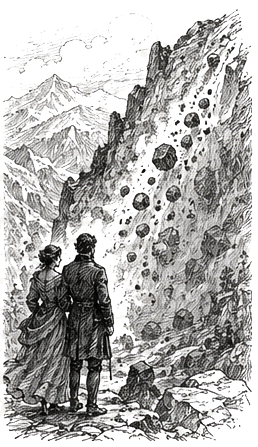
«Дикая мощь скал покоряется лишь истинному, безудержному порыву...»
Настроение: роковые, бурные страсти. В стиле Лермонтова и кавказских поэм.
Первый игрок: «Высоко в горах, на самой вершине, веками лежал безмолвный, холодный ледник. Он казался вечным и незыблемым, как наши правила и сословия. Но солнце страсти прогрело скалы до самого основания. В глубине гранита родилась едва заметная дрожь…»
Второй игрок: «Камень не выдерживает! С оглушительным грохотом первая глыба срывается вниз. За ней увлекаются тонны земли и камней. Лавина набирает скорость, снося вековые деревья, круша все преграды на своем пути. Нас несет вперед эта безумная, дикая сила…»
Первый игрок: «Обвал достигает дна ущелья! Эхо гремит среди скал, земля уходит из-под ног, все окутано плотным облаком каменной пыли. Полный хаос, крушение, триумф первозданной мощи природы! Мы летим в эту пропасть вместе, и пути назад нет…»
Второй игрок: «Грохот смолкает. Пыль оседает на дно каньона. Горная река пробивает себе новое русло среди обломков. Все изменилось, прежний пейзаж разрушен, но воцарилась великая, звенящая тишина». (Синхронный выдох, книга закрывается)
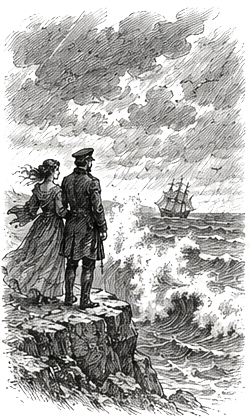
«Черные волны смывают наносное, увлекая душу в соленую бездну».
Настроение: для персонажей, тоскующих по южной свободе посреди провинциальной глуши. Стихийно и глубоко.
Первый игрок: «Море сегодня необычайно темное, почти черное. На горизонте собираются тяжелые, свинцовые тучи. Волна за волной, пока еще лениво и тихо, накатывают на пустынный песчаный берег. Но в глубине вод уже зреет огромная, пугающая сила…»
Второй игрок: «Ветер крепчает, он гонит волны вперед, заставляя их вскипать белой пеной. Вода с грохотом бьется о прибрежные скалы, брызги долетают до нашего лица. С каждым ударом море подходит все ближе, отрезая нам пути к отступлению, затапливая сушу…»
Первый игрок: «Девятый вал! Огромная, неодолимая стена воды обрушивается на нас, увлекая в пучину. Водная стихия крутит, швыряет, ослепляет, мы теряем ориентацию, где верх, а где низ. Полная покорность этой соленой, яростной бездне…»
Второй игрок: «Шторм уходит в море. Стихия успокаивается, оставляя на мокром песке лишь тихий шепот прибоя, обрывки водорослей и выброшенные штормом ракушки. Вода снова прозрачна и тиха». (Синхронный выдох, книга закрывается)
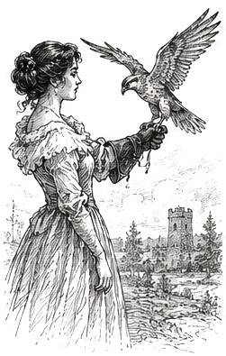
«Гордая птица привыкла летать в небесах, но покорно склоняется перед ласковой властью...»
Настроение: властная нежность, преодоление робости. Подойдет для инициативы знатной дамы и мужчины ниже по статусу.
Первый игрок (Инициатор): «Смотрите, как высоко в небе кружит гордая птица. Ей подвластны все ветры, но здесь, на земле, её ждет шёлковая перчатка. Я протягиваю руку, и птица замирает в нерешительности. Не бойтесь, подлетите ближе, почувствуйте, как тепло и надежно это прикосновение…»
Второй игрок (Ведомый): «Птица складывает крылья и камнем падает вниз, повинуясь вашему зову. Сердце в груди бьется как безумное. Это опасная близость – один неверный жест, и когти ранят кожу, но воля полностью парализована вашим взглядом, вашей манящей силой…»
Первый игрок: «И вот сокол на руке. Я снимаю с него путы приличий, позволяя дикой природе взять верх. Границы стерты! Охотник и добыча меняются местами в этом яростном, бьющем крыльями порыве. Мы задыхаемся от этой внезапной, запретной близости…»
Второй игрок: «Крылья опускаются. Дыхание выравнивается. Гордая птица укрощена и покорно склоняет голову на вашу ладонь. В комнате воцаряется тишина, полная сладкого, изнурительного плена». (Синхронный выдох, книга закрывается)
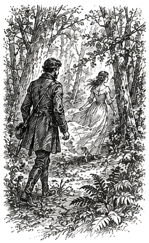
«Тёмный лес скроет твои шаги, но от этой погони невозможно уйти...»
Настроение: доминирование сильного над слабым, покорность и сладострастие (подходит по духу для барина и служанки).
Первый игрок (Доминирующий): «Лесная чаща тиха, но я слышу, как хрустнула ветка под легкой ногой. Вы пытаетесь скрыться в тени деревьев, но от этой погони не уйти. Я иду по вашему следу, сокращая расстояние, и самый воздух вокруг нас начинает дрожать от охотничьего азарта…»
Второй игрок (Уступающий): «Сердце замирает, спрятаться негде, ветви цепляются за платье, удерживая на месте. Шаги все ближе, ваше дыхание уже обжигает шею. Сил бежать больше нет, колени слабеют от страха и странного, запретного предвкушения…»
Первый игрок: «Я настигаю вас! Ловушка захлопнулась. Больше нет слов и просьб – только чистая, первобытная сила власти. Я заставляю вас обернуться, и мы проваливаемся в омут безумной, обжигающей страсти, где состраданию нет места…»
Второй игрок: «Погоня окончена. Сопротивление сломлено, уступая место полному, изнеможенному послушанию. Лес снова затихает, баюкая нас в своих тёмных, надежных объятиях». (Синхронный выдох, книга закрывается)
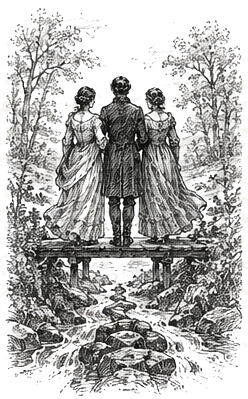
«Когда три потока сливаются воедино, исчезают прежние берега...»
Настроение: для интимной сцены на троих. Идеальный баланс сил, слияние без лишних.
Первый игрок: «Два горных ручья бежали навстречу друг другу, звеня среди камней. Но русло реки расширяется, и к ним присоединяется третий поток – тихий, глубокий, скрывающий в себе неизведанные омуты. Воды касаются друг друга, перемешиваясь…»
Второй игрок: «Течение подхватывает нас всех. Нас больше не двое, мы теряем свои прежние берега. Водоворот закручивает наши чувства, тепло одного переходит к другому, а третий направляет это общее движение. Времени и пространства больше нет…»
Третий игрок: «И вот мы становимся единым, бурным, неостановимым потоком! Волны захлестывают, кружат, разбиваются в пену. Каждый из нас – и капля, и вся река целиком. Полное растворение друг в друге, триумф общего, неделимого безумия…»
Все трое шепотом: «Река впадает в бескрайнее, спокойное море. Волны улеглись. Мы растворились в этой бездне, став единым целым навсегда». (Синхронный выдох, книга закрывается)
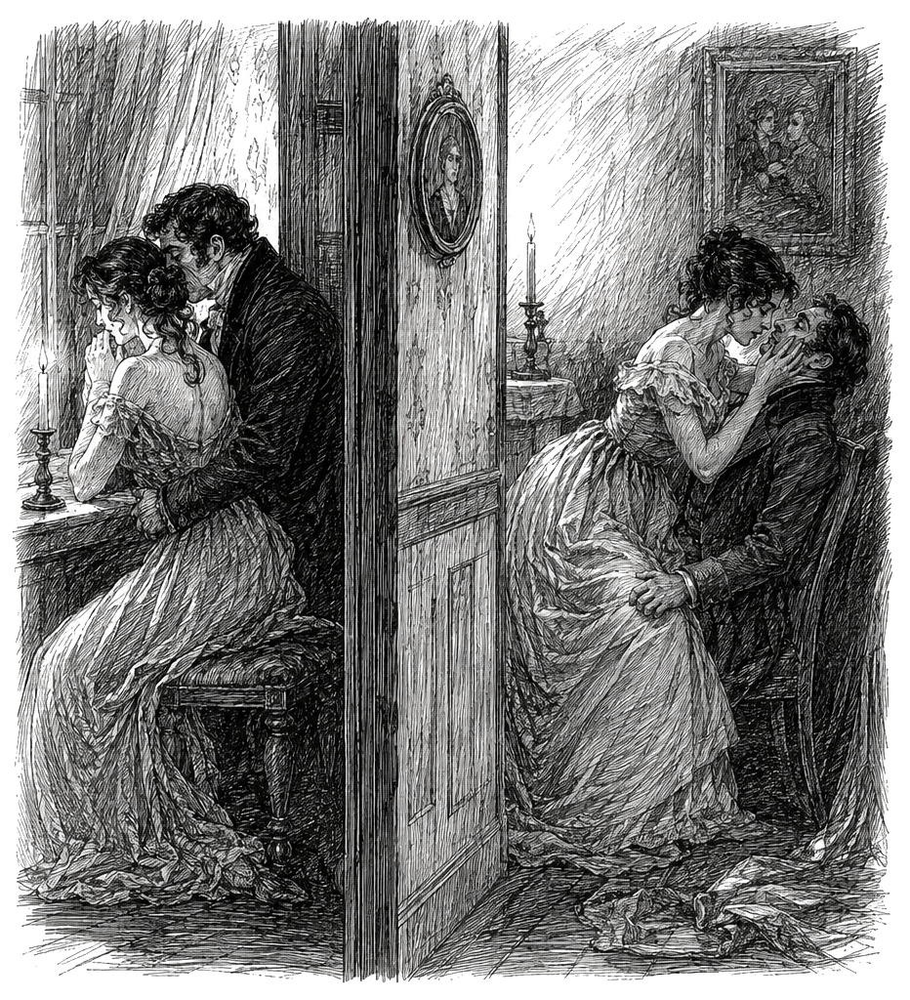
«Чужая страсть, подслушанная в темноте, разжигает собственное пламя».
Настроение: для двух пар, находящихся в одной комнате. Эффект подслушивания и синхронного накала.
Пара А (Первый игрок): «Мы думали, что одни в этом старом доме, но за тонкой перегородкой слышны чужие шаги и приглушенный шёпот. Наш собственный огонь только разгорается, но это невидимое присутствие заставляет кровь бежать быстрее…»
Пара Б (Третий игрок): «Да, мы слышим вас. Ваши вздохи отдаются эхом в нашей темноте. Мы не видим ваших лиц, но чувствуем, как ваше напряжение передается нам. Мы подхватываем этот ритм, зажигая свое пламя…»
Пара А (Второй игрок): «Страсть становится общей! Звуки за стеной ускоряются, сплетаясь с нашими. Мы словно танцуем один невидимый танец на четверых. Больше нет стыда, чужая близость подталкивает нас к краю бездны…»
Пара Б (Четвертый игрок): «Пик бури! Две лавины срываются одновременно по разные стороны стены. Стены рушатся в нашем воображении, оставляя лишь единый, оглушительный, общий триумф чистой страсти…»
Все четверо вместе: «Дом затихает. Свечи догорели в обеих комнатах. Осталось только тяжелое дыхание в темноте и знание общего секрета». (Синхронный выдох четырех игроков)
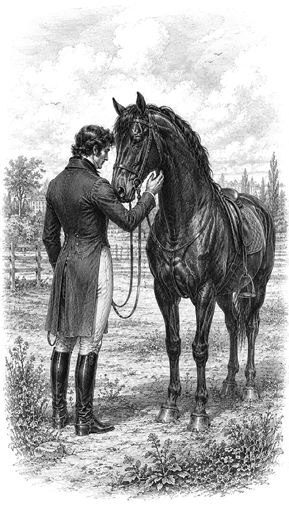
«Самый горячий конь повинуется не силе руки, но тому, кому решился доверить свой бег».
Настроение: добровольное руководство и глубокое доверие. Для пар, готовых раствориться в игре ведущего и ведомого.
Первый игрок (Всадник): «Посмотри, как прекрасен этот вороной. Под его темной кожей перекатывается живая, горячая сила. Стоит сделать шаг навстречу – он шумно вдыхает воздух, переступает копытами, пробуя мою решимость. Такое пламя не укротить уздой... только приручить».
Второй игрок (Конь): «Я замираю от мягкого касания к шее. Повод натянут едва заметно, но этот легкий ток подчиняет сильнее любых шпор. Мое тело готово взорваться диким галопом, сорваться прочь... но я остаюсь, околдованный твоей близостью».
Первый игрок: «Движение. Сначала медленный, гипнотический шаг. Затем рысь. Быстрее... Мы ловим один ритм, и борьба уступает место чистому наслаждению. Поводья отпущены. Мне больше не нужны команды – достаточно прикосновения кожи к коже, одного жаркого выдоха. Мы летим, единые в этом безумном доверии».
Второй игрок: «Бег замедляется, переходя в тягучую истому. Дыхание обжигает. На шее блестит влажная испарина, но в глазах – лишь глубокое, пьянящее удовлетворение. Твои пальцы ласково зарываются в мою гриву. Мы замираем в объятиях друг друга, унося это чувство в новую дорогу». (Синхронный выдох, книга закрывается)